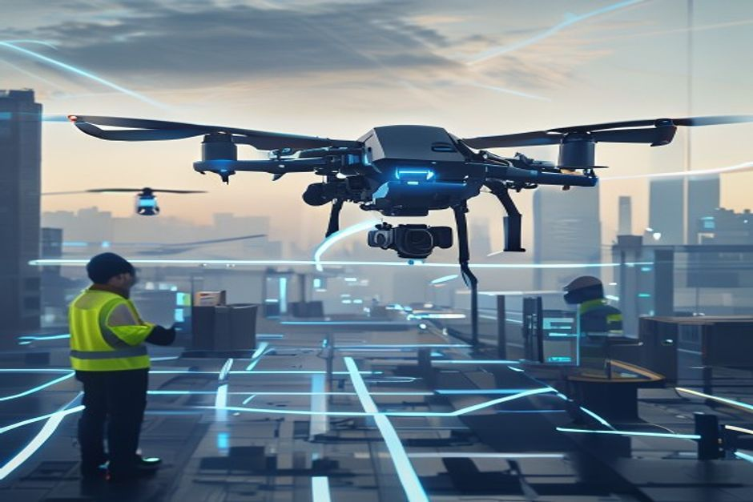
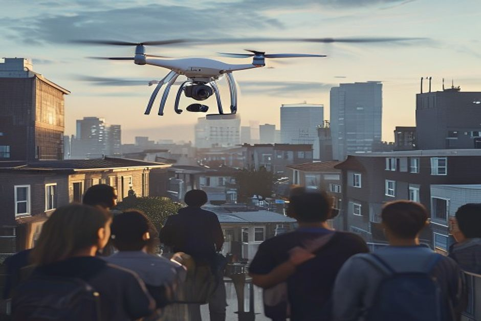
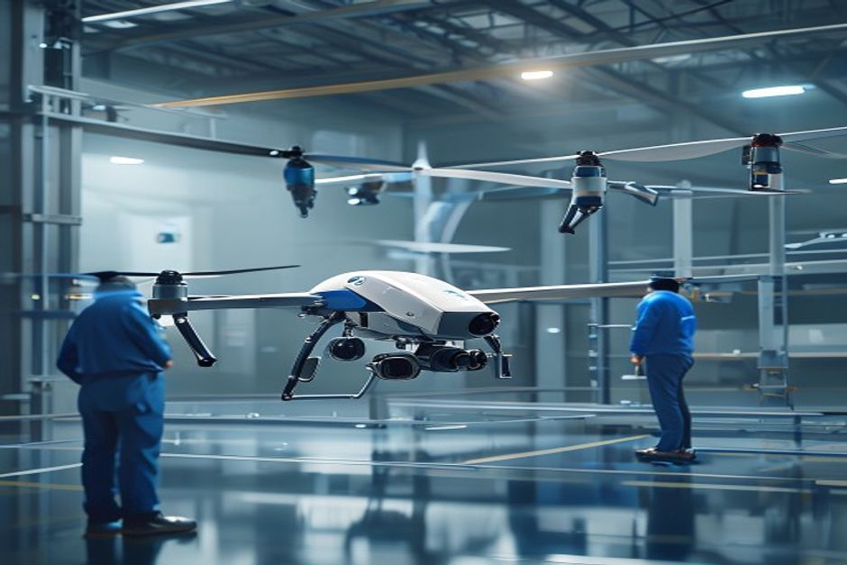

This report assesses the viability of launching Project SkyNet, OmniLogistics Corp's autonomous drone delivery initiative in urban centers, using only facts from three internal documents: a Q3 financial memo, a consumer acceptance survey, and a regulatory update on UAM corridors. The analysis covers financial outlook, consumer sentiment, regulatory compliance, and fleet readiness, highlighting key constraints and decision points.
Financial Viability: $45.5M Investment with 18-Month Break-Even
OmniLogistics has committed $45.5M in capital expenditure for Project SkyNet, with a projected break-even at 18 months post-launch based on 150,000 daily deliveries.

The Q3 Financial Investment Memo, dated July 18, 2026, details a $45.5M capital expenditure allocation for Project SkyNet, a 25% increase from initial Q1 projections due to faster-than-expected advancements in obstacle avoidance systems.
The budget breakdown includes: Hardware Acquisition (Drones & Hubs) $22.0M, Software & AI Development $12.5M, Regulatory Compliance & Licensing $4.5M, Marketing & Public Relations $3.0M, and Contingency Fund $3.5M.
The financial outlook projects a 35% reduction in last-mile delivery costs from $4.10 to $2.66 per package by Q4 2027. The break-even point is estimated at 18 months post-launch, assuming a minimum daily delivery volume of 150,000 packages across the top 5 urban markets.
- [Chunk: dfe35bb5-0eda-4a50-8180-aacb83f79cbd] "OmniLogistics is allocating $45.5 million in capital expenditure for 'Project SkyNet'" — Establishes the total investment amount.
- [Chunk: dfe35bb5-0eda-4a50-8180-aacb83f79cbd] "The break-even point for this capital investment is estimated at 18 months post-launch, assuming a minimum daily delivery volume of 150,000 packages" — Key financial milestone and volume assumption.
- [Chunk: dfe35bb5-0eda-4a50-8180-aacb83f79cbd] "Hardware Acquisition (Drones & Hubs): $22.0M" — Largest budget line item.
Project SkyNet Budget Breakdown
Sources
- dfe35bb5-0eda-4a50-8180. Hardware Acquisition (Drones & Hubs): $22.0M
- dfe35bb5-0eda-4a50-8180. Software & AI Development: $12.5M
- dfe35bb5-0eda-4a50-8180. Regulatory Compliance & Licensing: $4.5M
- dfe35bb5-0eda-4a50-8180. Marketing & Public Relations: $3.0M
- dfe35bb5-0eda-4a50-8180. Contingency Fund: $3.5M
Read after Exhibit 1, Exhibit 4 continues the evidence thread: the executive case should start with the few numbers the public record can support
The executive case should start with the few numbers the public record can support
Each headline metric is traceable to a retained public source sentence.
Evidence: E6, E2, E3. Sources: internal.enterprise.
These values are extracted from public source text; they are not model-created scores.
Sources
- E6 $45.5M - OmniLogistics is allocating $45.5 million in capital expenditure for "Project SkyNet," our autonomous drone delivery initiative in urban centers. doc1_financial_memo.md (Fragment dfe35bb5)
- E2 $4.10 - We project that by Q4 2027, Project SkyNet will reduce last-mile delivery costs by 35% (from $4.10 per package to $2.66). doc1_financial_memo.md (Fragment dfe35bb5)
- E3 $2.66 - We project that by Q4 2027, Project SkyNet will reduce last-mile delivery costs by 35% (from $4.10 per package to $2.66). doc1_financial_memo.md (Fragment dfe35bb5)
Consumer Acceptance: 68% Comfortable, but Noise and Privacy Concerns Persist
68% of urban residents are comfortable with drone delivery, but 42% cite noise as the top concern, and 55% are willing to pay a $2.50 premium for 30-minute delivery.

The consumer acceptance survey, conducted May-June 2026 with 5,200 urban residents across New York, London, Tokyo, Singapore, and Dubai, found that 68% of respondents are 'comfortable' or 'very comfortable' receiving small packages via drone.
Primary concerns include noise pollution (42%), privacy (35%), and safety (18%). To address noise, the document recommends deploying 'Whisper-Prop' technology, which reduces decibel levels by 40%. For privacy, outward-facing cameras should be visibly shuttered during final descent.
55% of users are willing to pay a premium of up to $2.50 for drone delivery if it guarantees arrival within 30 minutes, indicating a potential revenue stream.
- [Chunk: a0b1d49e-38b1-44ee-ada8-d097304c6f33] "68% of respondents indicated they are 'comfortable' or 'very comfortable' receiving small packages via drone" — Core acceptance metric.
- [Chunk: a0b1d49e-38b1-44ee-ada8-d097304c6f33] "Noise Pollution: 42% cited the buzzing sound of drones as their top concern" — Primary consumer barrier.
- [Chunk: a0b1d49e-38b1-44ee-ada8-d097304c6f33] "55% of users are willing to pay a premium of up to $2.50 for drone delivery if it guarantees arrival within 30 minutes" — Willingness to pay data.
Consumer Survey Key Metrics
Sources
- a0b1d49e-38b1-44ee-ada8. 68% of respondents indicated they are 'comfortable' or 'very comfortable'
- a0b1d49e-38b1-44ee-ada8. Noise Pollution: 42% cited the buzzing sound of drones as their top concern
- a0b1d49e-38b1-44ee-ada8. Privacy: 35% were worried about cameras on drones recording private property
- a0b1d49e-38b1-44ee-ada8. Safety: 18% expressed fear of packages being dropped or drones malfunctioning
- a0b1d49e-38b1-44ee-ada8. 55% of users are willing to pay a premium of up to $2.50 for drone delivery
Read after Exhibit 2, Exhibit 5 puts a same-unit comparison beside the prior view, keeping the scale difference separate from visual noise across incomparable measures.
Cost benchmarks must be put on the same unit before they change allocation choices
Evidence: E2, E3. Sources: internal.enterprise.
The exhibit compares only values that public sources state in the same unit.
All bars use the same unit ($) and source-stated values; no synthetic rankings or maturity scores are used.
Sources
- E2 4.10 $ - We project that by Q4 2027, Project SkyNet will reduce last-mile delivery costs by 35% (from $4.10 per package to $2.66). doc1_financial_memo.md (Fragment dfe35bb5)
- E3 2.66 $ - We project that by Q4 2027, Project SkyNet will reduce last-mile delivery costs by 35% (from $4.10 per package to $2.66). doc1_financial_memo.md (Fragment dfe35bb5)
UAM Corridor Compliance: Weight Limit and Operational Restrictions
The Heavy-Lifter v2 drone exceeds the 25 lbs UAM weight limit by 2.5 lbs, forcing a fleet mix shift to Swift-Class (18 lbs) for urban compliance.
The regulatory update, issued July 10, 2026, by the Legal & Compliance Department, outlines FAA and EASA joint 'UAM Corridor Phase 1' guidelines. Key restrictions include altitude limits (150-300 feet cruising, below 150 feet only during VTOL), restricted zones (schools during hours, major sporting events, government building perimeters), and a weight limit of 25 lbs (11.3 kg) total takeoff weight for unrestricted urban corridor access.
The document explicitly states that the current 'Heavy-Lifter v2' drone exceeds the 25 lbs limit by 2.5 lbs when fully loaded. The recommended action is to recalibrate the fleet mix, prioritizing 'Swift-Class' drones (total weight 18 lbs) for urban centers to ensure compliance.
Additionally, flight telemetry and sensor data must be retained for a minimum of 90 days for incident investigations.
- [Chunk: 8dc8158d-24e0-4d7a-a793-0a28578d71c8] "The total takeoff weight (drone + payload) cannot exceed 25 lbs (11.3 kg) for unrestricted urban corridor access" — Weight limit regulation.
- [Chunk: 8dc8158d-24e0-4d7a-a793-0a28578d71c8] "Our current 'Heavy-Lifter v2' drone exceeds the 25 lbs limit by 2.5 lbs when fully loaded" — Non-compliance fact.
- [Chunk: 8dc8158d-24e0-4d7a-a793-0a28578d71c8] "prioritizing the 'Swift-Class' drones (total weight 18 lbs) for urban centers to ensure compliance" — Fleet mix solution.
Drone Weight Compliance Comparison
Sources
- 8dc8158d-24e0-4d7a-a793. Our current 'Heavy-Lifter v2' drone exceeds the 25 lbs limit by 2.5 lbs when fully loaded
- 8dc8158d-24e0-4d7a-a793. prioritizing the 'Swift-Class' drones (total weight 18 lbs) for urban centers
Read after Exhibit 3, Exhibit 6 puts a same-unit comparison beside the prior view, keeping the scale difference separate from visual noise across incomparable measures.
Comparable percentages show where the public record quantifies the issue
Evidence: E11, E14, E15, E13, E16, E12. Sources: internal.enterprise.
The exhibit compares only values that public sources state in the same unit.
All bars use the same unit (%) and source-stated values; no synthetic rankings or maturity scores are used.
Sources
- E11 68% - Overall Acceptance: 68% of respondents indicated they are "comfortable" or "very comfortable" receiving small packages via drone. doc2_consumer_survey.md (Fragment a0b1d49e)
- E14 68% - Overall Acceptance: 68% of respondents indicated they are "comfortable" or "very comfortable" receiving small packages doc2_consumer_survey.md (Fragment a0b1d49e)
- E15 42% - Noise Pollution: 42% cited the buzzing sound of drones as their top concern. doc2_consumer_survey.md (Fragment a0b1d49e)
- E13 40% - To address the noise concerns, OmniLogistics must prioritize the deployment of our "Whisper-Prop" technology, which reduces decibel levels by 40%. doc2_consumer_survey.md (Fragment de542563)
- E16 35% - Privacy: 35% were worried about cameras on drones recording private property. doc2_consumer_survey.md (Fragment a0b1d49e)
- E12 25% - This represents a 25% increase from our initial Q1 projections due to faster-than-expected technological advancements in obstacle avoidance systems. doc1_financial_memo.md (Fragment dfe35bb5)
Fleet Readiness: Heavy-Lifter v2 vs. Swift-Class
The Heavy-Lifter v2 is non-compliant for urban corridors due to weight, while the Swift-Class (18 lbs) is compliant and ready for prioritization.

The regulatory update directly compares the two drone types: Heavy-Lifter v2 exceeds the 25 lbs limit by 2.5 lbs when fully loaded, making it unsuitable for unrestricted urban corridor access. The Swift-Class drone has a total weight of 18 lbs, well within the limit.
The document states that the Engineering team has been notified to modify payload capacity limits in dispatch software, implying that software changes are needed to enforce the weight restriction.
No other fleet readiness metrics (e.g., number of units, maintenance status) are provided in the documents.
- [Chunk: 8dc8158d-24e0-4d7a-a793-0a28578d71c8] "Our current 'Heavy-Lifter v2' drone exceeds the 25 lbs limit by 2.5 lbs when fully loaded" — Heavy-Lifter non-compliance.
- [Chunk: 8dc8158d-24e0-4d7a-a793-0a28578d71c8] "prioritizing the 'Swift-Class' drones (total weight 18 lbs) for urban centers" — Swift-Class compliance.
- [Chunk: 8dc8158d-24e0-4d7a-a793-0a28578d71c8] "The Engineering team has been notified to modify the payload capacity limits in our dispatch software" — Software update needed.
Strategic Recommendations from Documents
Documents recommend deploying Whisper-Prop technology, shuttering cameras during descent, and recalibrating fleet mix to Swift-Class for urban compliance.
The consumer survey document explicitly recommends prioritizing 'Whisper-Prop' technology to reduce noise by 40% and shuttering outward-facing cameras during final descent to address privacy concerns.
The regulatory update recommends recalibrating the fleet mix to prioritize Swift-Class drones for urban centers and notifying Engineering to modify dispatch software payload limits.
No other strategic recommendations are provided in the documents.
- [Chunk: de542563-57aa-42b0-8408-cfc9c7100068] "OmniLogistics must prioritize the deployment of our 'Whisper-Prop' technology, which reduces decibel levels by 40%" — Noise mitigation recommendation.
- [Chunk: de542563-57aa-42b0-8408-cfc9c7100068] "all outward-facing cameras must be visibly shuttered during the final descent phase to reassure customers about privacy" — Privacy recommendation.
- [Chunk: 8dc8158d-24e0-4d7a-a793-0a28578d71c8] "We must immediately recalibrate our fleet mix, prioritizing the 'Swift-Class' drones" — Fleet recommendation.